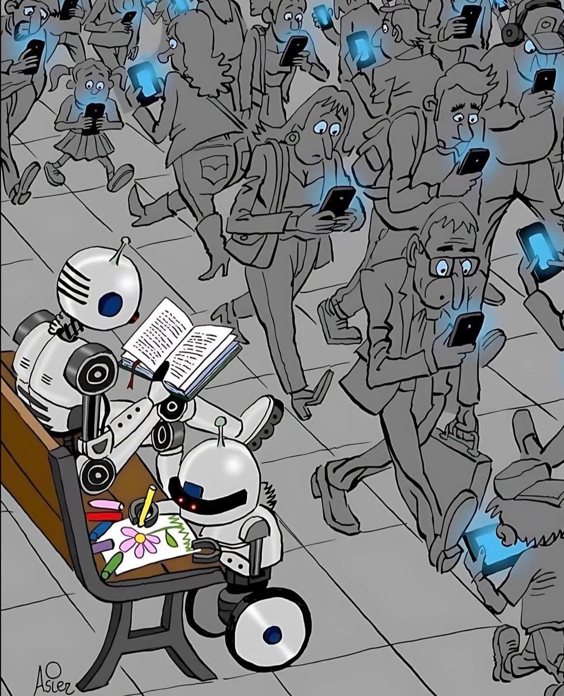

—PAGE.01 · SELAMAT DATANG, GUYS!
Rekomendasi
Buku.
Selain hobi, kenapa sih chandra bikin ini?
Di era AI ini, hampir semua orang doomscrolling. Kecanduan sosial media, gosip, ngikutin tren dan informasi-informasi yang sebenernya gaada gunanya buat kita. Pada sisi yang lain: hardware, software, algoritma semuanya selalu improve dari sisi kecerdasan dan efisiensi. Kapan kamu improve? Kapan terakhir kali kamu baca / belajar sesuatu yang baru?
Okedeh, aku mau belajar →
Daftar Buku
BILL OF MATERIALS · 3 ENTRIES


—Kenapa si harus repot-repot baca?
Kenapa Membaca?
Satu buku bisa mengubah cara kita memandang diri sendiri. Kebiasaan kecil yang konsisten akan mengubah cara kita berpikir, cara kita memandang permasalahan, cara kita menghadapi kesulitan, dan tentunya akan terus compounding menjadi sebuah karakter yang jauh lebih baik dari hari kemarin. Membaca juga terbukti secara science mengurangi anxiety, depression, dan short attention span.